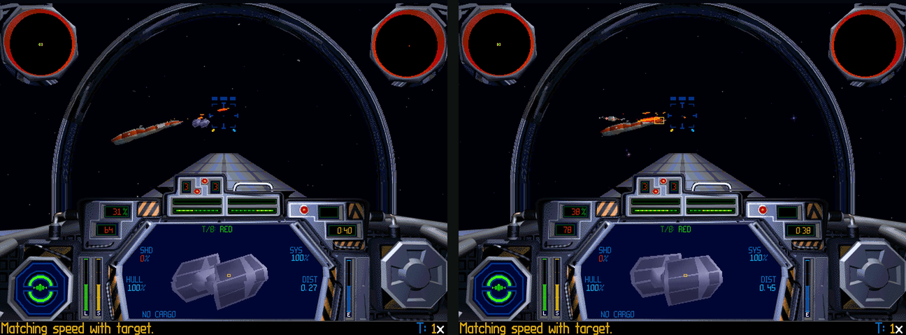
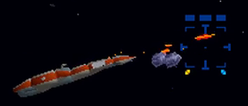
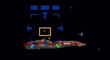
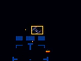
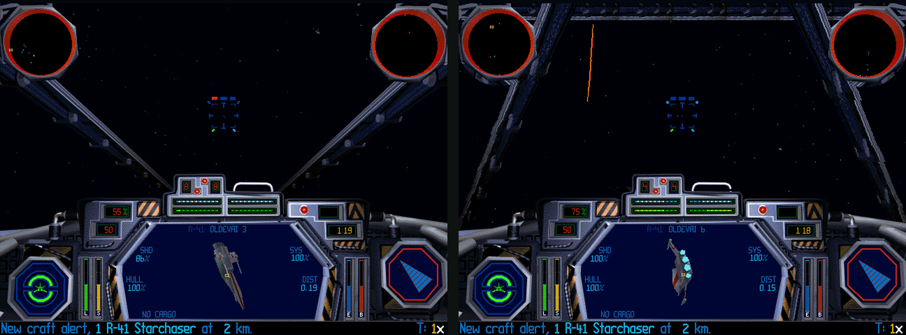

01Two screens, one battle
- Each pilot runs the whole game on their own machine. No video crosses the network.
- What crosses it is small: where each craft is, which shots were fired, which hits landed, and who flies what.
- The emulator does all of it. The game's code is never changed: not on disk, not in memory.
- Below, both screens at the same moment of the Z-95 challenge (two Z-95 Headhunters against the Empire's own craft). Both targeting displays show the same T/B: 0.27 km from the host, 0.45 km from the guest.

Comment
- The Z-95 challenge is itself made by the emulator: every craft in the mission is swapped Rebel ↔ Imperial by a table at launch, and the Z-95 cockpit is cut from the gunboat's files by code.
- The same machinery flies every Combat Chamber mission and 13 battles, two or three pilots to a room.
02What came from Wing Commander, and what had to be new
- The multiplayer layer was built for Wing Commander I and II, then carried Privateer and RetroVega. TIE Fighter reuses its plumbing:
- Reused as is:
- the transports: lobbylink's WebRTC data channels (one reliable and ordered, one best effort), TCP for the test rigs, the host relaying between guests
- the protobuf envelope (
wc.proto), the per-instruction hook dispatcher, the key-script test rigs, the text line drawn over the picture - the web page: rooms, the public lobby, chat, voice, controllers, the release gate
- Written for TIE Fighter:
- a finder for a program the extender hides, the address map, its own session, ownership and rates, a 32-bit trampoline, the flight controls, cockpits and voices made by code
| Wing Commander I and II | TIE Fighter | |
|---|---|---|
| The program | 16-bit real mode, overlays | 32-bit protected mode under DOS/4GW, one flat address space |
| Found by | its segments | a scan of memory for data only it has |
| Hooks keyed on | CS:IP | the low word of EIP, then the full address |
| Frames | the host paces a fixed rate; the wingmen take the host's frames | each game keeps its own clock; frame times vary |
| Craft | a few, inside a sphere of action | up to 32 at once, spread over tens of kilometres |
| Sync | frames in step | an owner per craft, reports by distance |
03Finding a 32-bit game inside a 16 MB machine
- DOS never says where the program went. DOS/4GW loads the 32-bit executable into extended memory itself.
- So when DOS loads
DOS4GW.EXE, the layer starts looking: every 250 ms for a minute, at every dword above 1 MB, with reads that cannot fault. - The bait is data only TIE Fighter has: the pilot ranks table (20000, 50000, 100000, 250000, 500000) and the string
RESOURCE\. - With the data object placed, the code object is found below it by the first bytes of
tie_updatetimeand oflaser_createprojectile. - They turned up at linear 0x1FA000 and 0x2A5000: packed 0xAB000 apart, not the 0xB0000 the executable's header implies. So each object is found on its own, never assumed from the other.
- Paging is off and the selectors are flat: once found, an image address is one addition away from a linear one.
Comment
- The address map comes from OpenTIE, a decompilation-faithful C port of this very build with the retail addresses in its comments.
- Only facts were taken (addresses and layouts), never code. Every address was checked against the bytes of
Z_TIE__.EXEbefore use.
04Hooks that never write a byte
- Wing Commander's hooks key on a 16-bit CS:IP. A 32-bit EIP does not fit, so a second table holds the low 16 bits of each watched EIP.
- A hit there calls
tie_check_hooks, which compares the whole address. A 16-bit game never has an IP past 0xFFFF, so Wing Commander, Privateer and RetroVega take exactly the path they took before. - A hook only reads memory, writes the game's data, sets registers, or starts a call. The game's instructions are never touched.
- A hook in the middle of a function first checks the instruction bytes around it, once. If the build were different, the hook would stay quiet rather than guess.
| Image address | Place | Why it is watched |
|---|---|---|
| 0x577F4 | tie_updatetime | the top of each frame: network in and out, controls |
| 0x5CDA0 | user_inputforplane | the player's stick, once a frame |
| 0x5F801, 0x5F831 | (inside user_inputforplane) | the stick made signed (the 1995 bug below) |
| 0x5FAE1 | (inside user_inputforplane) | the bank into a turn, left out in "point to aim" |
| 0x32448 | move_moveobjects | copies written; the trampoline's calls run here |
| 0x2E0E4 | laser_createprojectile | a shot fired |
| 0x1433C | collide_laserhitcraft | a bolt meets a craft |
| 0x148F0 | collide_damagecraft | damage applied |
| 0x17BF8 | create_createcraft | a craft made |
| 0x16B8C | create_createmission | the mission set up: the seats |
| 0x82504 | shipext_Get_Mission_Path | the mission file named: everybody flies the host's |
| 0x218D8 | fediskio_loadspecies | craft types chosen: pairings, cockpits, voices |
05Calling the game's own functions
- The best way to make a bolt, apply a hit or credit a kill is the game's own function: its shields, messages, explosions and score all follow.
- The trampoline borrows a place the game passes every frame, the entry of
move_moveobjects. There it saves the registers, pushes that place as a return address, loads the arguments and jumps. - Watcom's register calling convention makes this tidy: the arguments go in eax, edx, ebx and ecx, so a call is four registers and one pushed address.
- When the function returns, the hook sees EIP back at its own place with ESP as saved. It runs the next queued call, or restores everything, including DOSBox's lazily computed flags, and lets the frame go on.
- A before step runs with the arguments in place. It writes what the call needs at that instant (a stand-in bolt, an impact point) or calls it off.
- The reverse trick is an early return: at a function's entry, set EIP to the return address and step ESP past it, so a hit this machine must not apply never happens.
06The flight in memory
- Every object in flight is an 88-byte record in one table: craft in slots 0 to 31, projectiles 32 to 79, explosions and debris after.
- Each craft also has a 0x21A-byte
CraftDatarecord: its AI, target, throttle, hull and shields. - The sync needs surprisingly few fields: place, attitude, speed, the move vector and the axes, then hull, shields, systems and the AI's countdown.
- Slots matter: the mission's own setup creates the same craft in the same slots on every machine, so a slot number names a craft across the network.
// the units the game counts in (all integers, fixed point) 1 km = 40,960 world units a mission second = 236 ticks (the clock: 4 ms ticks) a frame at 59 fps = 4 ticks (frameticks, 0xEB712) a full turn = 65,536 (pitch 0x4000 = level) a direction = Q15, 16 bits (the move vector, the axes) a T/F's top speed = 225 (3,600 in hyperspace) a laser's damage = its bolt's collision radius (¼ on a freighter, 1/16 on a starship)
Comment
- There is no floating point in the flight's core: positions are int32, angles 16-bit, trigonometry from tables, a 16-bit shift-register random.
- That makes copies exact to write. A report's numbers go into the record as they are, with no rounding between machines.
07Why not lockstep
- Both machines load the same mission file with the same random seed, so the same craft arrive with the same orders.
- But each frame moves everything by its own
frameticks, and the frame rate wanders with what is on screen: 59 to 60 in an empty sector, 33 in a busy one (HF3M, measured alone). - Two games agree only with the same inputs at the same frame times, and two machines never have those. A lockstep would hold both to the slower one, every frame.
- So each craft has one owner whose game flies it, and every other machine shows a copy placed from the owner's reports.
08Who flies what
- The rule is the user's: the host owns most craft, except the ones both within range and in the guest's view, or targeted by the guest and not by the host.
- In numbers: a guest takes a craft within 2.5 km and 45° of its nose (lasers' reach), or its own target within 4 km. A craft the host targets stays the host's.
- Letting go needs a clear reason: past 1.25 × the reach, 60° off the nose, or the target dropped. A craft changes owner at most once a second.
- Between two guests: the first to target it, then the nearer one. A pilot's own craft is always its own; the craft of a pilot who left go to whoever notices.
- The host keeps the table and sends it (
TieOwners) on every change and every 2 s. - Measured: 79 to 117 changes of owner in a 3.5-minute run of HI2W; 245 in a 4:38 gunboat-and-shuttle battle.
Comment
- Why the guest flies what it is aiming at: on its own machine that craft moves by the game's own motion, frame by frame. A copy steered by reports would arrive a few milliseconds late and jump.
- Small, near, fast targets are where TIE Fighter rewards precise shooting, so that is where exactness goes.
09Near, mid and far
- A battle can hold 30 craft over tens of kilometres. Sending all of them every frame cost some 50 KB a second when 24 were near the guest.
- So the rate falls with the distance from the other pilot, and far craft are flown by each machine itself.

Nearunder 2.5 km
- reported every frame
- within 10 m: written as reported; further: eased in at 300 m/s at most
- its AI held; its owner's shots come over
- hits: the shooter decides, the owner applies

Mid2.5 to 10 km
- every 10th frame
- between reports the game's own move carries the copy along its move vector
- still a copy within 5 km: no AI of its own

Farpast 10 km
- one craft every 30 frames, in turn: each every 10 to 20 s, sent reliably
- beyond 5.5 km of this pilot: flown by this machine's own AI
- its shots shown for show; damage only on its owner's machine
- pulled toward each report over the time until the next
- Measured in battle 2, mission 1 flown by two: 23,559 near reports, 5,563 mid and 80 far; up to 14 craft flown by the guest's own AI, 299 of their shots shown.
- The far copies sat 604 units (15 m) from their owner's reports at the median.
Comment
- A bug found here: a craft whose AI was held through its hyperspace arrival never died on the other machine.
- The game lets a craft die only with its flight flag (CraftData +0x60) clear. The arrival sets it to 6 and the craft's own AI clears it, which a held copy never ran. One guest made 359 kill calls in a run, all ignored.
- Now the flag is cleared before each kill call: four Y-wings that died on the host died once each on the guest.
10One frame, hook by hook
- The order matters. Reports are taken at the top of a frame, since mid-frame a copy's pitch has already been nudged by this machine's dynamics.
- Copies are written at the entry of the move: after this machine's AI, weapons and dynamics, before anything moves.
- The AI is held off a copy by keeping its planner's countdown full: the game only plans for a craft whose countdown ran out, and its shots go with it.
- The first version polled the sockets every 999 instructions; the host then ran at 85% of real time. Polling once a frame, and every 4 ms otherwise, put both back at 60 frames a second.
11Shots and hits: the shooter decides, the owner applies
- Lasers are where a lag shows. The rule from the brief: whoever fired a bolt decides whether it hit.
- A shot near another pilot is sent and made again on the other machine by the game's own
laser_createprojectile, from where the shooter's craft is there. - A bolt that hits a craft another machine flies does no damage on the shooter's machine. It sends a
TieHitinstead, and shows a preview by the game's own sums: the struck shield first, then the hull; never a death, a system or an ion overflow. - The owner puts a stand-in bolt in a free projectile slot (its segment, type, radius and shooter) and calls
collide_laserhitcraft. Shields, components, messages and the flash all come from the game. - The kill: the owner remembers whose hit began the death and its dying reports name it. The shooter's machine then calls the game's
collide_updatekills, so the kill and its "congratulations" message are the shooter's.
- With 150 ms of lag each way, the guest saw each hit 170 to 190 ms before the host applied it, and the two copies' hulls agreed afterwards.
- In a 3.5-minute HI2W run every shot of each pilot was made on the other (327 and 245), and every one of the guest's 20 to 28 hits on the host's craft was applied.
Comment
- The impact flash used to sit where the bolt's segment ended. The hit now carries the collision test's own offset (
collidexoffat 0xEAB7C), so the flash lands where the shooter saw it: measured to the unit. - Friendly fire is the game's too: a lead shot at a craft with a friend behind it hits the friend, and is applied like any hit.
12Why a guest's shot lands where it was aimed
- On a network, what a pilot sees is always a little old. At a T/F's top speed (225: some 4,100 units, 100 m, a second), 100 ms of lag moves it 410 units, a third of its own length.
- A shot tested against a stale picture on the far machine would miss by that much. TIE Fighter's targets are small and fast, and precise shooting is the game, so the design never tests a shot anywhere but where it was aimed.
- Three things make a guest's aim count:
- It is probably aiming at a craft its own machine flies. The ownership rule hands the guest every craft within 2.5 km and 45° of its nose, and its own target within 4 km. On the guest's machine those craft move by the game's own AI and physics every frame, with no report in the loop, so the lead the pilot sees is the real one.
- Its screen decides. The game's own hit test (
collide_laserhitcraft) runs on the shooter's machine, against the picture the pilot aimed at. The owner of the craft is told the result and never tests it again against its own picture. - The owner applies it to the craft, wherever the craft now is. The hit travels as "craft 7, this far from its middle", not as a point in space. A stand-in bolt in a free projectile slot carries the shooter's bolt type, radius and segment, so shields, hull, systems, messages, the kill and the flash are the game's own.
- Ownership does not flip in the middle of a burst: a craft leaves the guest only past 1.25 × the reach, 60° off its nose, or with the target dropped, and changes owner at most once a second.
- The exception is a craft the host is targeting too: it stays the host's, and the guest sees a copy written from the host's reports every frame (as reported within 10 m, eased in otherwise). The guest's hits on it are still decided on the guest's screen, so they still count.
- An AI craft the guest's machine flies works the same way. Its AI aims at the host's craft as the guest's machine shows it (a pilot's craft is reported every frame), its hits are decided on the guest, and the host applies them. In HG3M such a fighter, handed to the guest, shot the host down.
- The guest sees its hit at once: a preview by the game's own sums (the struck shield first, then the hull; never a death, a system or an ion overflow). The owner's figures replace it 600 ms later.
| A bolt… | Decided on | Applied on | Seen in the tests |
|---|---|---|---|
| of the guest, on a craft the guest flies | the guest | the guest: the game's own call | the usual case: the ownership rule gives the guest what is in its sights |
| of the guest, on a craft the host flies | the guest | the host, by a stand-in bolt | HI2W: 20 and 28 a run, every one applied |
| of an AI craft the guest flies, on the host | the guest | the host | HG3M: the host shot down by one |
remade from a TieShot, touching anything | nowhere | nowhere: its shooter's machine decides | every shot shown on both screens: 327 and 245 in HI2W |
| of a far craft this machine's AI flies | here, for show | only its owner's game deals damage | 299 shown on a guest in battle 2 mission 1 |
| on a craft already dead on its owner's machine | the shooter | dropped: "not ours to apply" | 18 of 19 applied in battle 2 mission 1 |
Comment
- With 150 ms of lag each way, the guest saw each hit 170 to 190 ms before the host applied it, and both copies' hulls agreed afterwards.
- The flash was measured too: every applied hit's flash at the shooter's impact to the unit, 264 to 453 units from a fighter's middle.
- The price is the old one of shooter-decides netcode: on the target's screen a hit can arrive a moment after the shot looked like a miss. In a co-op game against AI craft, that is the right trade.
13Things only one machine saw
- A mission's triggers run on every machine alike. That holds only while both machines agree about every craft.
- Four things happened on one machine and nowhere else:
- reinforcements called (Shift+S, then Space): the frigate came only for the pilot who called
- a craft inspected: its flag, its group's count and the "has been inspected" message
- the death of a far craft, which lasts some 60 ticks and fell between two reports
- a departure through hyperspace or into a hangar, which a held copy never makes
- Each is now a reliable
TieEventsent the moment it happens. The receiver does the game's own bookkeeping: the flag set, the message shown, the craft's exit scored. - The per-second log has a fingerprint: one letter for each flight group (not yet, arrived, active, dead, inspected). Two machines' logs are compared line by line.
14Seats, missions and who launches
- At
create_createmission's entry, the player's flight group gets one craft per seat in the room. A guest's game is told it flies the next one. - The mission's own setup then makes everybody's craft in the same slots: the host's T/F in slot 0 and the guest's in slot 1, on both machines.
- Missions flown alone get a partner group, copied when the craft types are loaded: a T/I and a T/F, a gunboat and a shuttle.
- Everybody flies the host's mission: when a guest's game names its mission file, the 14-byte mission name is swapped for the host's.
- The host decides, the guest waits: a guest's launch click is held until the host is flying, then replayed. A PA announcement repeats "All pilots, report to the briefing room" every 20 s.
- A pilot shot down, or the host done, ends everyone's flight 3 s later the game's own way, at the debriefing with Fly Mission Again.
15A sign bug from 1995
- The user's first flight test: "when I go left with either arrows it turns left then rapidly turns right".
- The cause was in the game.
user_inputforplanescales the stick by the craft's turn rate withxor eax,eax; mov ax,[inputdelta]; imul eax,ebx; sar eax,15. The stick is signed, butmov axinto a cleared eax reads it unsigned. - A stick of −d becomes 65,536 − d, so the result is 2·scale − d·scale/32,768, kept as 16 bits. When the scale is almost 0x8000, 2·scale wraps to nearly zero and the error vanishes.
- The Empire's fighters have that scale (0x7FFF): the error is 2 units. The Z-95 has 0x5555: the least left is a hard left, and past two thirds of the stick the sign flips to a hard right. The shuttle and Y-wing suffer too; the gunboat's pitch leans 4,096 down.
- The fix is one register at the instruction after each
sar: eax becomes the signed product. OpenTIE's own port fixes it in the same place.
- Measured on a Z-95: Left held 3 s, then Right 3 s, came back to within a quarter of a degree of its heading.
- The mouse's aiming ring had sat on the gunsight's bottom mark. The ring is now drawn on the projection's own centre, read from the game every frame.
- "Point to aim" steers by the square of the pointer's distance past a 4% dead zone. Below the least the game will turn for (17 mickeys a frame across, 33 up and down), the least is given now and then.
- The game banks into every turn. In "point to aim" a hook at 0x5FAE1 hands the bank a zero, the function's own way out; the right button held turns the mouse into a roll. "Point to aim, banking" keeps the game's way.
- TIE Fighter has no keyboard trigger. Space now holds the left mouse button in flight, except when the game itself is waiting for Space.
16Knowing when a flight is over
- The DOS build leaves
maingameflagat 1 from a flight's end until the next flight is set up. The layer believed the pilot was still flying in the debriefing: the aiming ring took the mouse, and only Fly Mission Again could be clicked. - The mission's end flag is the better signal, with one trap: the hyperspace arrival is a scene of its own that ends with the flag set for some 155 ms before the mission is made again.
- So a flight counts as over once the end flag has been set for 1.5 s.
17Two cockpits the game never had
- The room's pairings fly craft the player never flew in 1995: the Imperial shuttle beside a gunboat, and Z-95 Headhunters in the challenge missions. Neither has a cockpit in the game's files.
- The shuttle's craft record names no cockpit at all; the game would ask for
CP640\.INT. The Z-95's borrows the name XWING, and TIE Fighter ships no such cockpit. - The rule from the start: the game's art is never shipped. So both cockpits are made at run time, by code, from the player's own gunboat files, on every machine; the gunboat's own cockpit stays exactly as it was.
- The hook is
fediskio_loadspecies: the mission has been read and its craft types marked, but no craft or cockpit has loaded yet. There the player's craft is named SHUTTLE or Z95, and the files are written beside the game's own. - A cockpit's description (
.INT) lists 28 views of 36 bytes, 95 instruments of 6 bytes from 0x3F0, and the instruments' sprite file. The new ones are the gunboat's with the view names changed, so every gauge, scope and display sits where the gunboat's does and works. - Only the pictures change. A view file holds a PANL sprite (the panel), a MASK (where space shows through), and a palette.
// PANL: the panel sprite, one byte code at a time 0..250 a run of (op & 3) + 1 pixels of base + (op >> 2) 251 b a new base colour 252 c n n + 1 pixels alternating c, c + 1 253 n c n + 1 pixels of colour c (colour 253 itself: see-through) 254 end of the row 255 end of the sprite // MASK: for each of the 3-D view's rows (325 of 480 forward) a signed state (not negative: space first), then run lengths that flip it a run past 255: 0, then the rest − 256; past 511: 0, 0, the rest − 512
- The shuttle (the user's reference: the stolen shuttle's cockpit in Return of the Jedi): the gunboat's V struts are found in the mask as the longest stretch of rows where a hidden run, with space on both sides, moves smoothly. A line is fitted to their middles and widths and the bands cut out, the scopes' disks kept.
- Two legs of an A are drawn leaning in, 122 pixels over 282 rows, pushed out until each outer edge just leaves the screen on row 313. Each leg's row is copied from a strut row that leans the same way, stretched to the leg's length, and drawn only where space shows, so the dashboard and scopes stay in front. A 24-row bar runs along the top with the scopes hanging from it.
- The Z-95 (the user's sketch: an arched canopy and a long nose): the struts come out, an arch goes in (the upper half of an ellipse, its legs down to the side consoles, each pixel a strut's row across its width), and a long nose runs from the dashboard's middle to the horizon.
- The nose is drawn in the struts' own greys, picked from the panel's palette by brightness: lit along its top, a ridge seam, panel lines and seams across. Its foot sits flush on the display's bevel, row 277, as the user asked.
- The instruments. The Z-95 gets its own sprite file, the gunboat's with sprites 30 to 33 redrawn: the shield display's picture of your craft from behind, now a Z-95's back (a wing with a gun at each tip, an engine each side, the canopy on top), red to white by hull damage. The ion-cannon lights left the crosshair: a Z-95 has none.
- The targeting display's mask is chosen inside the program by the craft's number. While a shuttle or Z-95 flies, the emulator writes the gunboat's 480 bytes over the default and puts them back afterwards.
- The side views (keypad 7, 4, 1 and up; the game mirrors 9, 6, 3) are cut the same way at 640 × 480: the shuttle's left-forward view gets the A's leg, the Z-95's the canopy hoop. An FNV-1a hash of each gunboat picture is checked first: a picture that is not the one measured is left alone.
- Each view has its own palette for colours 0 to 63, so a pixel copied between views takes the nearest colour of the view it lands in.

18Radio lines and voices
- Radio lines are data too. The mission's 16 messages sit in a table of 90-byte slots; where all 16 were used, a line is copied in from another mission's file.
- Voices live only on the CD. A voice bank for the challenge is built on the game's drive at launch, and the emulator's file open sends the game's request there.
19The browser
- The player drops GOG's 424 MB installer on the page; it unpacks in the browser in 13 s to 698 MB, including a 594 MB raw CD image.
- Chrome's IndexedDB refused the game in one record (the largest that fit was 133,169,152 bytes), and Blobs failed in headless Chrome. Big files are now stored as 32 MB parts in a second store.
- The browser build had no CD image support at all; it is compiled in now. The game quits without its disc.
- GOG's settings name General MIDI, and a browser has no synthesizer for it. The page writes the FM (OPL3) driver's settings instead, from the disc.
- A browser guest flew at 59 to 61 frames a second beside a native host, its craft on the host 18 units off at the median.
20Testing two games on one computer
- Every change was measured on two emulators at once: a native host and a native or browser guest, joined through a local lobby room.
- A key script per machine drives the front end from boot: Space to skip the opening, clicks through registration, the concourse, the Combat Chamber and the briefing. In flight 62 s after boot.
- Scripted pilots fly the tests: target the nearest enemy, turn to where a bolt fired now would meet it, fire within 1 km. A DEMO callsign gives a machine's craft to that pilot as a wingman, so one person can test two-player.
- Each report is stamped with the wall clock, so the two machines' logs can be joined and compared.
| Measured | Result |
|---|---|
| A guest's craft on the host, TCP | 7 units at the median, 51 at worst; attitude within 0.16° (a T/F is about 1,300 units across) |
| The same through a lobby room (WebRTC) | 8 and 68 units |
| A browser guest | 18 and 111 units; 59 to 61 frames a second |
| Near copies, HF2W | 28 units at the median, the host's 12 craft on the guest |
| Far copies, battle 2 mission 1 | 604 units (15 m) at the median |
| Shots, HI2W | every shot of each pilot made on the other: 327 and 245 |
| Hits with 150 ms of lag each way | shown 170 to 190 ms before the owner applied them; hulls equal after |
| Bandwidth from the host | about 23 KB a second with 4 craft near the guest; about 50 KB with 24 |
| Three pilots | a guest's craft on the other guest 14 to 28 ms old, through the host |
Tidbit
- Built from 2026-11-06 to 2026-11-09: 108 commits, 8,473 lines in
src/cpu/wcnet_tie*.cpp. - Nothing of it changes Wing Commander, Privateer or RetroVega: every TIE path answers only once the TIE program has been found.